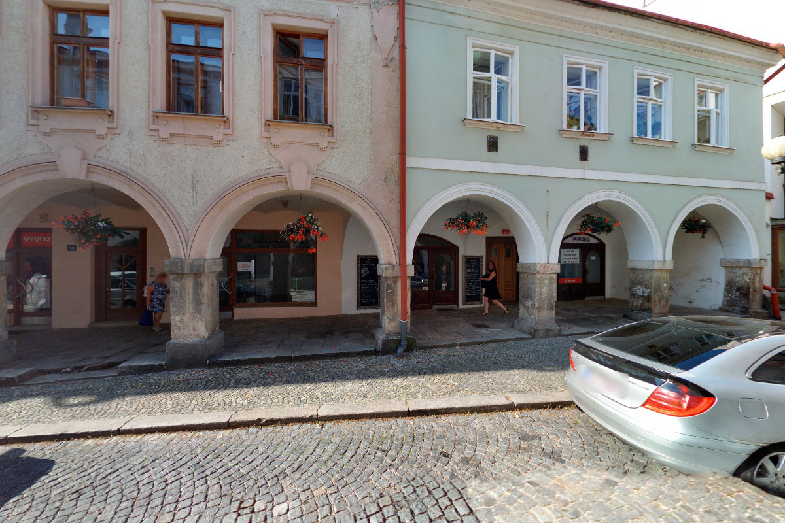
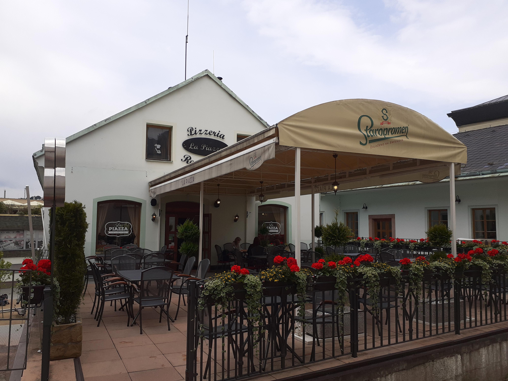
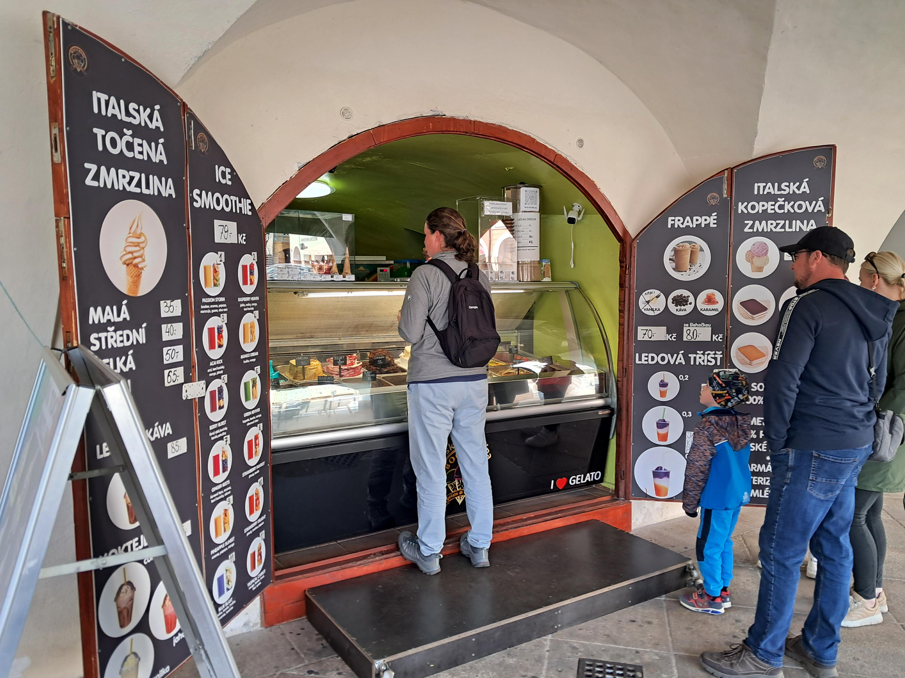

Kavárna na náměstí
Ideální na snídani, kávu a pomalý začátek dne v centru města.
kavárnasnídaně
Přehled je rozdělený podle stylu podniku, takže si snadno vybereš rychlou zastávku, klidný oběd i večerní posezení.

Ideální na snídani, kávu a pomalý začátek dne v centru města.

Jednoduchá kuchyně pro ty, kteří chtějí rychle pokračovat v objevování města.

Vhodná pro delší oběd nebo večeři s lokální atmosférou a poctivým servisem.

Když potřebuješ jen krátký oddech, kávu a něco sladkého mezi prohlídkami.
Vhodné na přestávku mezi památkami a krátké doplnění energie.
Dobrá volba, pokud chceš posedět, probrat plán a dát si delší pauzu.
Vyber podnik podle nálady a zakonči den pohodovým posezením.